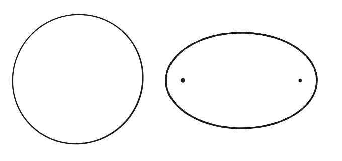
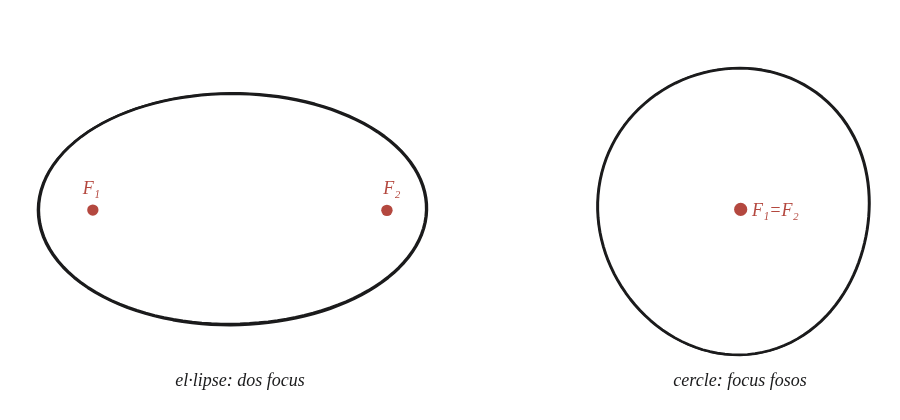

Una circumferència és un tipus especial d'el·lipse. On són els seus focus?

Un punt, no un procediment
No cal cap construcció elaborada: només cal tornar a la definició d'el·lipse i veure què li passa quan es redueix al cas particular d'un cercle.
La definició, aplicada directament
Una el·lipse és el conjunt de punts P tals que PF₁+PF₂ és una constant fixa, 2a (la suma de distàncies als dos focus). Si els dos focus F₁ i F₂ són el mateix punt O, l'equació es converteix en PO+PO=2a, és a dir, 2·PO=2a.

Simplificar i reconèixer la figura
De 2·PO=2a surt directament PO=a: tots els punts P de la corba són a la mateixa distància a de l'únic punt O. Aquesta és, exactament, la definició d'una circumferència de radi a centrada a O.
Els dos focus d'un cercle (vist com a cas límit d'una el·lipse) coincideixen exactament al centre. Surt d'aplicar la definició d'el·lipse per suma de distàncies (PF₁+PF₂=2a) al cas F₁=F₂=O, que es redueix directament a PO=a: la definició mateixa d'una circumferència.
Comprovació
Amb 2a=14 (la suma constant), si els dos focus coincideixen: PO=7 per a tot punt P de la corba —un cercle de radi 7.